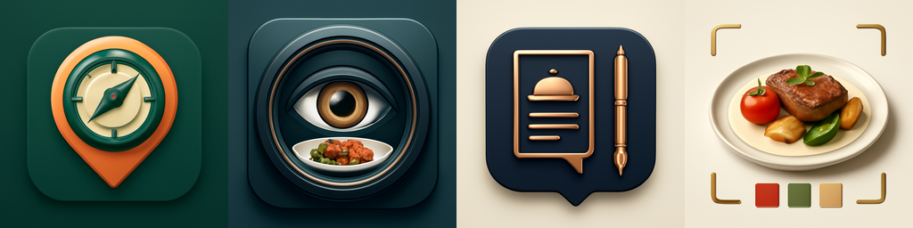

Band agents find restaurant prospects, inspect menu-food images, generate good-looking food assets, and write cold DM/email pitches for a menu design service owner.

The user needs a small daily batch of restaurants with a real outreach reason. Restaura focuses on restaurants where public menu or food images create a clear sales opening for better menu visuals.
Default cap is two checked restaurants per request.
Website, menu pages, contact paths, image URLs, and source notes stay attached to the lead.
The pitch points to the food-image issue and offers a sample upgrade.
Parses the prompt, searches Exa, validates restaurant sites, and passes candidate leads forward.
Checks public food/menu images with Featherless vision and writes the visual issue.
Writes subject lines, cold email, DM, SMS, and notes from the evidence.
Creates the food-image asset direction, generates a PNG, and delivers the packet to Telegram.
The room shows the handoff chain as each agent works. The final Telegram packet gives the user a checked restaurant lead, sendable pitch copy, and a generated food asset to include in outreach.
A single Band message from the user.
Research, inspection, copywriting, design, and delivery.
The user sends the pitch manually to the restaurant contact path.